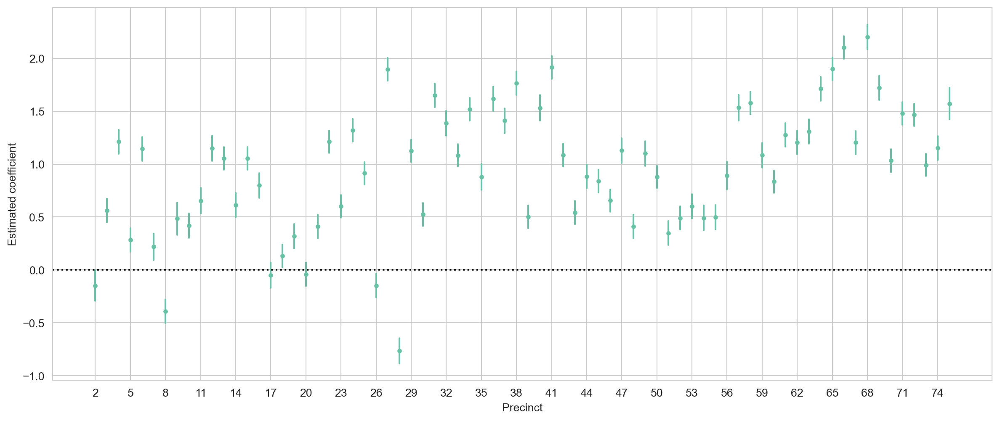
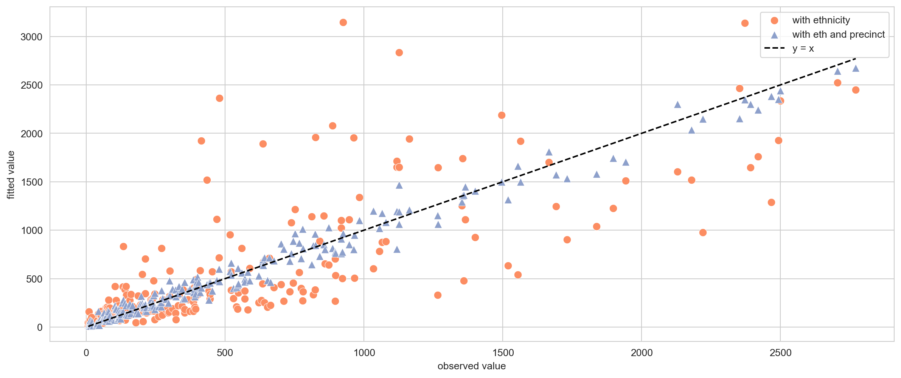
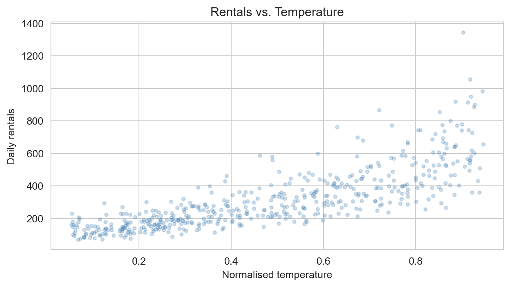
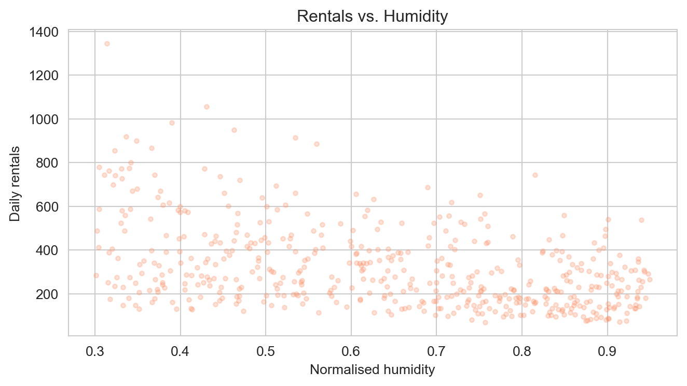
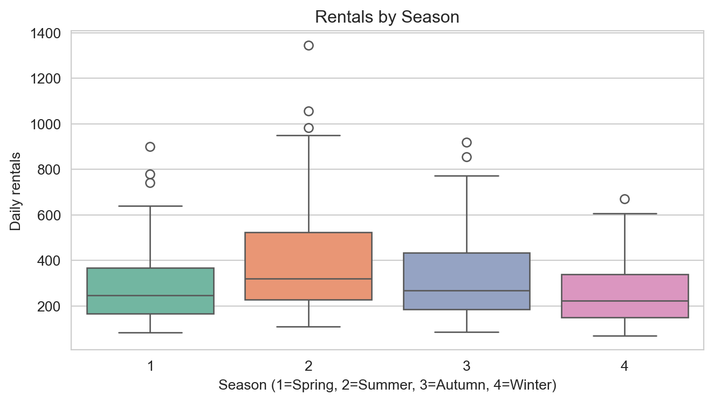
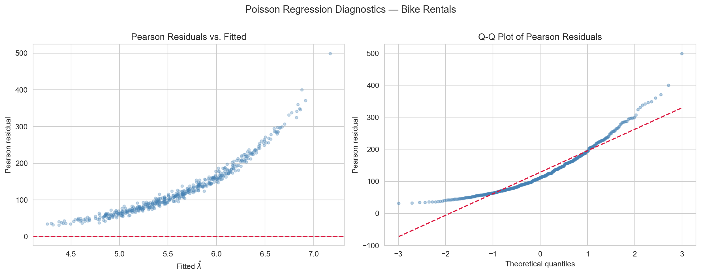

# Librariesimport numpy as npimport pandas as pdimport matplotlib.pyplot as pltimport seaborn as snsfrom scipy.stats import norm, binomfrom scipy.special import expit # the logistic (sigmoid) functionimport statsmodels.formula.api as smfimport statsmodels.api as smfrom statsmodels.stats.anova import anova_lmfrom sklearn.metrics import ( confusion_matrix, ConfusionMatrixDisplay, roc_curve, roc_auc_score)# Figure stylingsns.set_style('whitegrid')sns.set_palette('Set2')
Poisson Regression
Poisson regression is the GLM for count data: responses \(Y_i \in \{0, 1, 2, \ldots\}\). A natural model is \(Y_i \sim \text{Poisson}(\lambda_i)\), with \(\mathbb{E}[Y_i] = \lambda_i > 0\) and — crucially — \(\text{Var}(Y_i) = \lambda_i\) (variance equals mean).
X = (frisk .groupby(['eth', 'precinct'])[["stops", "past.arrests"]] .sum() .reset_index() .pipe(pd.get_dummies, columns=['eth', 'precinct'], dtype=int) .assign(intercept=1) # Adds a column called 'intercept' with all values equal to 1. .sort_values(by='stops') .reset_index(drop=True))y = X.pop("stops")
model_no_indicators = sm.GLM( y, X["intercept"], offset=np.log(X["past.arrests"]), family=sm.families.Poisson(),)result_no_indicators = model_no_indicators.fit()print(result_no_indicators.summary())
precinct_coefs = result_with_ethnicity_and_precinct.params.iloc[2:-1] # Only intersted in precinctprecinct_interval = result_with_ethnicity_and_precinct.conf_int().reindex(precinct_coefs.index)plt.figure(figsize=(15, 6))plt.plot(precinct_coefs, '.')for precinct, interval in precinct_interval.iterrows(): plt.plot([precinct, precinct], interval, color='C0')plt.axhline(y=0, linestyle=':', color='black')plt.xticks( precinct_coefs.index[::3], [int(x[1]) for x in precinct_coefs.index.str.split("_",)][::3])plt.ylabel("Estimated coefficient")plt.xlabel("Precinct")plt.show()

plt.figure(figsize=(15,6))plt.scatter( y, result_with_ethnicity.fittedvalues, marker='o', color='#fc8d62', edgecolors='white', linewidths=0.4, s=60, label="with ethnicity")plt.scatter( y, result_with_ethnicity_and_precinct.fittedvalues, marker='^', color='#8da0cb', edgecolors='white', linewidths=0.4, s=60, label="with eth and precinct")plt.plot(y, y, '--', color='black', label='y = x')plt.ylabel("fitted value")plt.xlabel("observed value")plt.legend()plt.show()

Application: Daily Bike Rentals
We simulate a dataset of daily bicycle rental counts with weather and calendar predictors — the structure mirrors real bike-sharing data and allows us to verify that the model recovers the known coefficients.
Distribution of daily rental counts. The right skew is characteristic of count data and motivates the use of Poisson regression over OLS.

Rentals vs. normalised temperature. A clear positive association is visible, consistent with the positive coefficient on temperature in the Poisson model.

Rentals vs. normalised humidity. Higher humidity is associated with fewer rentals, consistent with the negative humidity coefficient.

Rental counts by season (1 = Spring, 2 = Summer, 3 = Autumn, 4 = Winter). Summer and autumn show higher median rentals than spring or winter.
Incidence rate ratios (IRR = exp(β̂)) with 95% CIs. An IRR > 1 means more rentals; < 1 means fewer rentals per unit increase in the predictor.

Poisson regression diagnostics. Left: Pearson residuals vs. fitted values — constant spread around zero indicates the model is well-specified; a fan shape would indicate overdispersion. Right: Q-Q plot of Pearson residuals — points near the diagonal confirm the standardised residuals follow N(0, 1) as expected under a correctly-specified Poisson model.
GLM Diagnostics and Assumptions
In OLS, residuals \(e_i = y_i - \hat{y}_i\) have constant variance. In GLMs the variance of \(Y_i\) depends on the mean, so raw residuals are not comparable across observations. Two standardised alternatives are used:
Under a well-fitting GLM, both should look approximately \(\mathcal{N}(0,1)\) with no pattern against fitted values. Core assumptions and how to check them:
Assumption
How to check
Correct distribution family
Residual plots; compare AIC across families
Correct link function
Component-plus-residual plots; try alternative links
Correct linear predictor
Residuals vs. each predictor; added-variable plots
Independence of observations
Study design; check for clusters or time structure
No influential observations
Cook’s distance; leverage
GLMs do not require constant error variance or normally distributed errors — the exponential family framework handles both explicitly.
Overdispersion in Poisson Regression
ImportantOverdispersion
Overdispersion occurs when the observed variance exceeds the variance assumed by the model. For Poisson regression the model assumes \(\text{Var}(Y_i) = \lambda_i\). If the true variance is \(\phi \lambda_i\) with \(\phi > 1\), the data are overdispersed.
Overdispersion leads to underestimated standard errors and \(p\)-values that are too small. Diagnose it with the dispersion statistic \(\hat{\phi} = \chi^2_P / (n - p - 1)\), where \(\chi^2_P = \sum r_i^2\) is the Pearson chi-squared. Remedies include the quasi-Poisson model (which estimates \(\phi\) from the data) or the negative binomial distribution.